Lecture 8 — Exponential Family and Generalized Linear Models
บทเรียนนี้คือจุดหักเหของวิชา: จาก Lecture 1–7 ที่ทุกโมเดลเป็น Y ~ Normal ล้วน ๆ มาสู่กรอบทั่วไปที่ครอบคลุมทุกชนิดของ response — ทวินาม (binary/proportion), นับจำนวน (count), บวกเบ้ขวา (skewed positive) ฯลฯ Lecture 9 เป็นต้นไปจะเป็นการเอา GLM framework นี้ไปใช้กับ distribution เฉพาะทางแต่ละแบบ ดังนั้นถ้าจับ 3 เรื่องในบทนี้ไม่แม่น — (1) รูปทั่วไปของ Exponential Family, (2) 3 องค์ประกอบของ GLM (random/systematic/link), (3) การเขียนสมการโมเดล GLM แบบเต็ม — บทถัด ๆ ไปจะสร้างความเข้าใจผิดสะสมทันที
ทบทวนจาก Lecture 1–7: Classical Linear Model เขียนเป็น \(y_i = \beta_0 + \beta_1 x_{i1} + \cdots + \beta_p x_{ip} + \varepsilon_i\) โดย \(\varepsilon_i \sim \text{iid } N(0, \sigma^2)\) ซึ่งมี assumption หลัก 4 ข้อ: linearity (\(E[y_i|x_{i1},\ldots,x_{ip}] = \beta_0+\beta_1 x_{i1}+\cdots+\beta_p x_{ip}\)), independent errors (\(\text{cov}(\varepsilon_i,\varepsilon_j)=0\)), constant error variance (\(\text{var}(\varepsilon_i)=\sigma^2\) ทุก i), และ normality (ε_i แจกแจงปกติ) — 4 ข้อนี้คือ assumption เดียวกับที่เจอมาตั้งแต่ Lecture 1 ทุกประการ ไม่มีอะไรใหม่
ปัญหาเกิดเมื่อ response ไม่ใช่ตัวเลขต่อเนื่องแบบไม่มีขอบเขต ตัวอย่างที่สไลด์ยกมาคือ response แบบ Bernoulli:
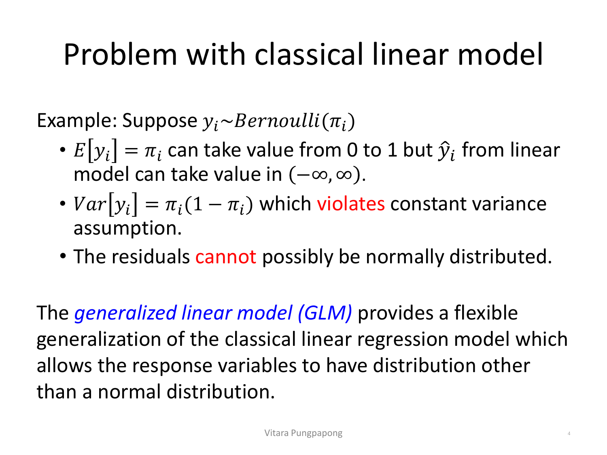
ไล่ทีละข้อจากภาพ: ถ้า \(y_i \sim \text{Bernoulli}(\pi_i)\) แล้ว \(E[y_i] = \pi_i\) มีค่าได้แค่ระหว่าง 0 ถึง 1 เท่านั้น แต่ \(\hat{y}_i = \hat{\beta}_0+\hat{\beta}_1 x_{i1}+\cdots\) จากโมเดลเชิงเส้นทำนายค่าได้ตั้งแต่ −∞ ถึง ∞ — สมการทำนายค่านอกช่วงที่เป็นไปได้จริงได้ตลอดเวลา (เช่น ทำนายความน่าจะเป็น = 1.4 หรือ −0.2) ซึ่งไม่มีความหมายทางสถิติเลย นอกจากนี้ \(\text{Var}[y_i] = \pi_i(1-\pi_i)\) ขึ้นกับ π_i โดยตรง แปลว่า variance เปลี่ยนไปทุกจุดตาม X ละเมิด constant variance assumption ตั้งแต่ต้น และเพราะ y_i รับค่าได้แค่ 0 กับ 1 เท่านั้น residual \(e_i = y_i - \hat{y}_i\) จึงไม่มีทางแจกแจงแบบต่อเนื่องแบบ Normal ได้เลยไม่ว่าจะพยายามยังไง — ทั้ง 3 assumption (linearity ของค่าทำนาย, constant variance, normality) พังพร้อมกันตั้งแต่เลือกใช้โมเดลผิด ไม่ใช่ปัญหาที่แก้ด้วยการ transform ข้อมูลเพิ่มเติมแบบผิวเผิน
Generalized Linear Model (GLM) คือคำตอบ — ขยายกรอบโมเดลเชิงเส้นให้ response แจกแจงแบบอื่นที่ไม่ใช่ Normal ได้ โดยยังรักษาโครงสร้าง "เชิงเส้น" ของตัวแปรอธิบายไว้เหมือนเดิม
สไลด์นิยาม exponential family distribution (EFD) ด้วย pmf/pdf รูปแบบเดียว ที่ distribution หลายตระกูล (Normal, Binomial, Poisson, Gamma, Inverse Gaussian) เขียนให้อยู่ในรูปนี้ได้ทั้งหมด:
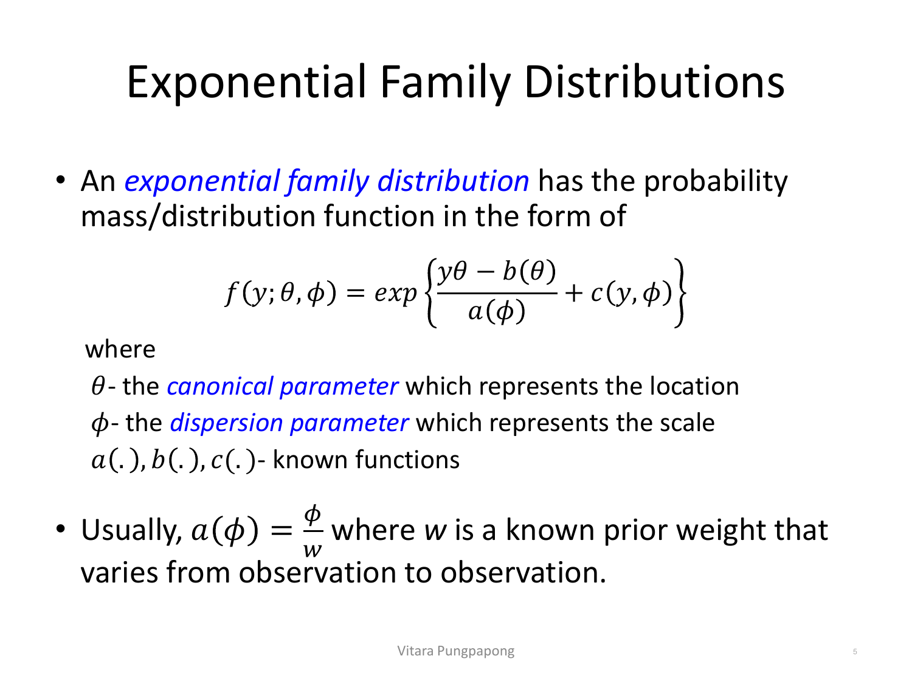
อ่านสูตรทีละพจน์ (นี่คือสัญกรณ์ที่ใช้ตลอด Lecture 8–14 ห้ามสลับความหมาย): \(\theta\) (canonical parameter) แทนตำแหน่ง (location) ของการแจกแจง — เป็นตัวที่ผูกกับ mean ของ Y โดยตรงในภายหลัง ส่วน \(\phi\) (dispersion parameter) แทนขนาดการกระจาย (scale) — คล้าย σ² ใน Normal ที่คุ้นเคย ฟังก์ชัน \(a(\cdot), b(\cdot), c(\cdot)\) เป็นฟังก์ชันที่รู้รูปแบบชัดเจนแล้ว (ไม่ใช่พารามิเตอร์ที่ต้องประมาณ) และมักเขียน \(a(\phi) = \phi/w\) โดย w เป็น prior weight ที่รู้ค่าอยู่แล้วและอาจต่างกันในแต่ละ observation (เช่น n_i ของแต่ละกลุ่มใน Binomial)
\[f(y; \theta, \phi) = \exp\left\{ \frac{y\theta - b(\theta)}{a(\phi)} + c(y,\phi) \right\}\]
θ = canonical parameter แทนตำแหน่ง (location) ของการแจกแจง, φ = dispersion parameter แทนขนาดการกระจาย (scale), a(·), b(·), c(·) เป็นฟังก์ชันที่รู้รูปแบบแน่นอนแล้ว (ไม่ใช่พารามิเตอร์ที่ต้องประมาณเพิ่ม)
ลองแทน \(y_i \sim \text{Binomial}(n_i, \pi_i)\) เข้าสูตรทั่วไป จะจัดรูปได้เป็น EFD พอดี:
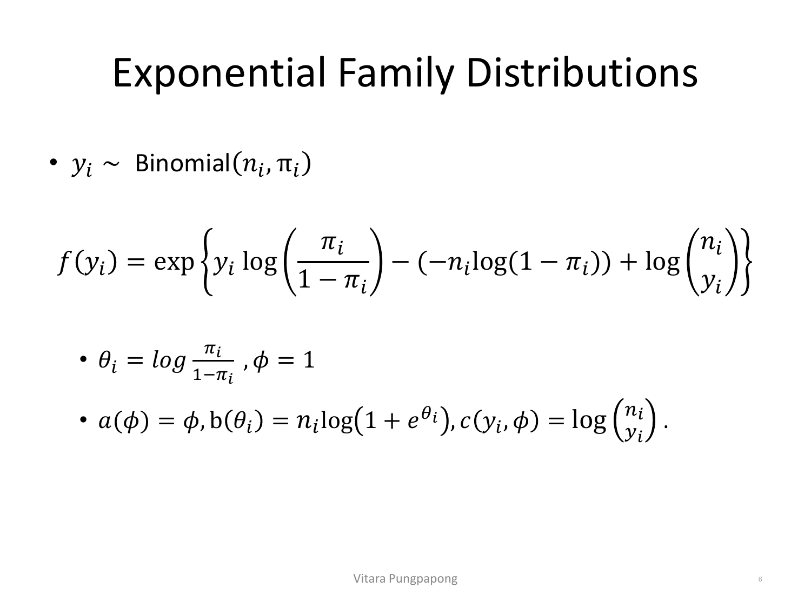
จัดรูปแล้วได้ \(\theta_i = \log\left(\frac{\pi_i}{1-\pi_i}\right)\) — สังเกตว่านี่คือlog-odds ของ π_i พอดี (ค่าที่คุ้นเคยจาก logistic regression ที่จะเจอใน Lecture 9) และ \(\phi = 1\) คงที่เสมอสำหรับ Binomial ไม่ต้องประมาณเพิ่ม ส่วน \(b(\theta_i) = n_i \log(1+e^{\theta_i})\) และ \(c(y_i,\phi) = \log\binom{n_i}{y_i}\) เป็นพจน์ normalizing ที่ไม่ขึ้นกับ θ ในแบบที่ทำให้ผลรวมความน่าจะเป็นเท่ากับ 1 พอดี — สังเกตว่า \(\theta_i\) เป็นฟังก์ชันของ π_i ล้วน ๆ ในขณะที่ φ ไม่ขึ้นกับ π_i เลย ตรงกับนิยาม "θ คือตำแหน่ง, φ คือขนาดกระจาย" จากหัวข้อ 2 เป๊ะ
ทำแบบเดียวกันกับ \(y_i \sim N(\mu_i, \sigma^2)\) — distribution ที่ใช้มาตลอด Lecture 1–7:
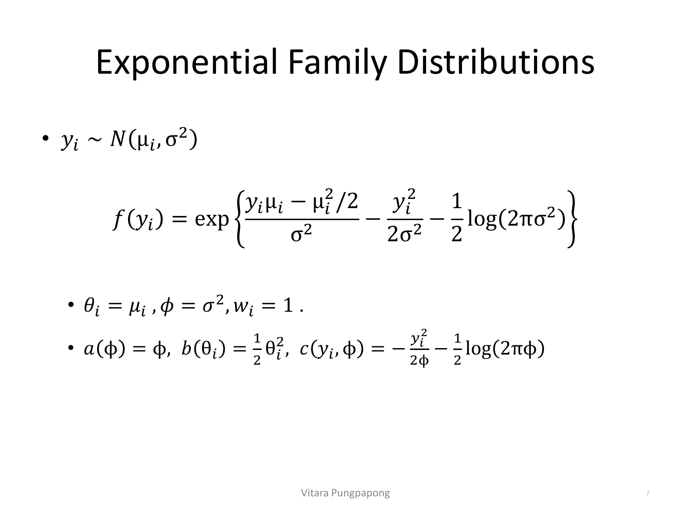
ผลลัพธ์สำคัญที่สุดในสไลด์นี้คือ \(\theta_i = \mu_i\) พอดี — ต่างจาก Binomial ที่ θ_i เป็น log-odds (ฟังก์ชันแปลงรูปของ π_i) กรณี Normal ตัว canonical parameter เท่ากับ mean ตรง ๆ ไม่ต้องแปลงอะไรเลย และ \(\phi = \sigma^2\) คือ dispersion parameter ที่ต้องประมาณจากข้อมูล (คุ้นเคยดีจาก Residual standard error ใน Lecture 1) ได้ \(a(\phi)=\phi\), \(b(\theta_i) = \theta_i^2/2\) — ผลลัพธ์นี้จะกลับมาใช้ยืนยันในหัวข้อ 9 ว่า OLS เป็นกรณีพิเศษของ GLM พอดี
\(b(\theta)=\theta^2/2 \Rightarrow b'(\theta)=\theta\) ดังนั้น μ = b'(θ) = θ = μ_i — ตรงกับที่ตั้งไว้ตั้งแต่แรกว่า θ_i=μ_i พอดี (ไม่ใช่เรื่องบังเอิญ — นี่คือวิธีที่สไลด์ใช้ยืนยันว่าจัดรูปถูก)
\(b''(\theta) = 1\) (อนุพันธ์อันดับสองของ θ²/2) ดังนั้น Var[Y] = b''(θ)·a(φ) = 1×φ = φ = σ² — ตรงกับ variance ของ N(μ,σ²) พอดีเช่นกัน
สรุป: สูตรทั่วไป μ=b'(θ), Var[Y]=b''(θ)a(φ) ใช้ตรวจสอบว่าจัดรูป EFD ถูกหรือไม่ได้เสมอ — ถ้าคำนวณแล้วไม่ตรงกับ mean/variance จริงของ distribution นั้น แปลว่าจัดรูปผิดตั้งแต่ต้น
สไลด์ทิ้งท้ายด้วย 3 distribution ที่ให้นักเรียนจัดรูปเป็น EFD เอง (ไม่ได้เฉลยในสไลด์) — บทเรียนนี้จะกลับมาแก้ให้ครบในหัวข้อ 8 โดยใช้สูตรทั่วไปแบบเดียวกับหัวข้อ 3–4:
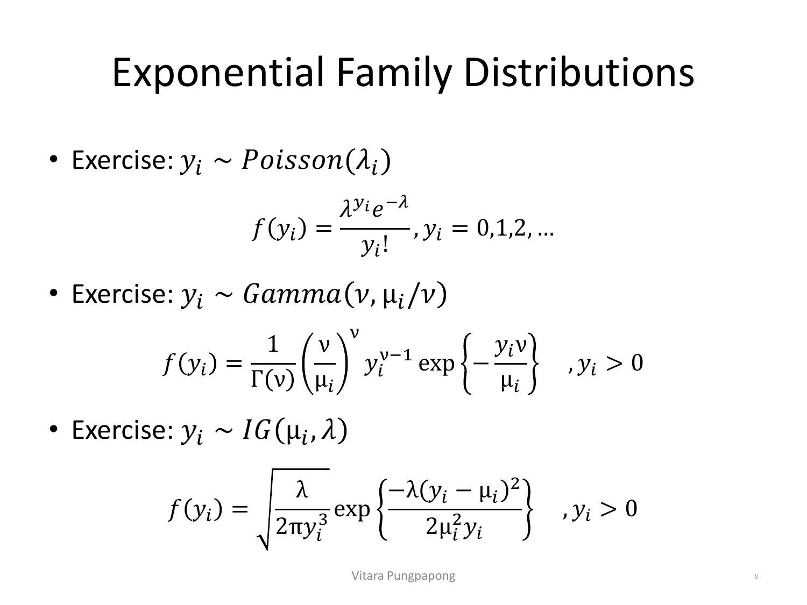
สังเกตรูปแบบ pdf ที่ให้มา: \(\text{Gamma}(\nu, \mu_i/\nu)\) คือ parameterize ด้วย shape \(\nu\) และ scale \(\mu_i/\nu\) (เขียนแบบนี้เพื่อให้ mean ของ distribution เท่ากับ μ_i พอดีไม่ว่า ν จะเป็นเท่าไร — สะดวกสำหรับใช้เป็น GLM) ส่วน \(\text{Inverse Gaussian}(\mu_i, \lambda)\) มี pdf ที่ซับซ้อนกว่าเพราะมีพจน์ \(y_i^3\) ในตัวส่วน — ทั้งสองแบบจะได้จัดรูปให้ครบใน "ตารางสรุป" หัวข้อ 8 ด้านล่าง โดยใช้เทคนิคเดียวกับที่ทำกับ Binomial/Normal ไปแล้ว (ดึงพจน์ที่มี y ออกมาเป็น yθ, พจน์ที่เหลือที่ไม่มี y จัดเป็น b(θ), ที่เหลือทั้งหมดเป็น c(y,φ))
ผลลัพธ์ทั่วไปที่ใช้ตรวจคำตอบในหัวข้อ 3–5 (และใช้ซ้ำตลอดบทถัดไป) มาจากทฤษฎีของ EFD โดยตรง ไม่ต้องหาแยกทีละ distribution:
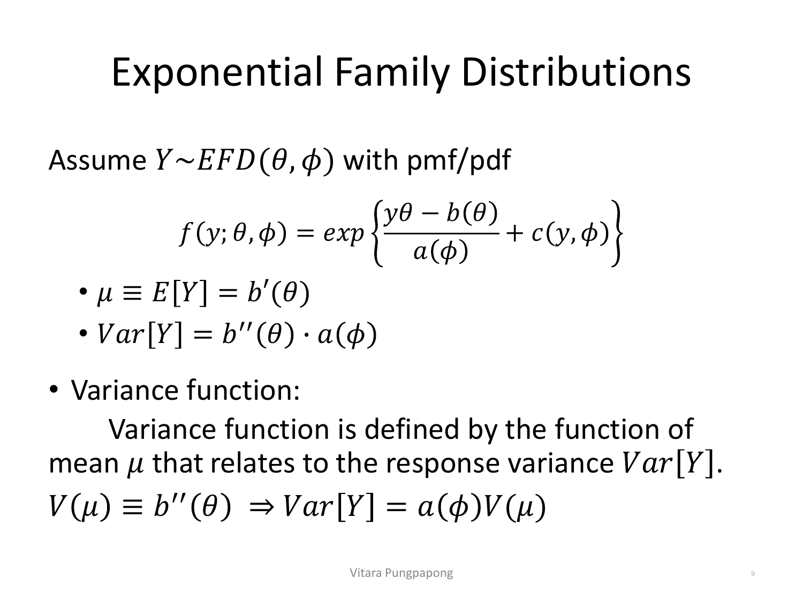
สองสูตรนี้ \(\mu \equiv E[Y] = b'(\theta)\) และ \(\text{Var}[Y] = b''(\theta)\cdot a(\phi)\) ใช้ได้กับ EFD ทุกตัว ไม่ใช่แค่ Normal — คือเหตุผลที่หัวข้อ 4 ตรวจคำตอบได้ด้วยการหาอนุพันธ์ของ b(θ) เฉย ๆ โดยไม่ต้องคำนวณ E[Y] จาก definition ตรง ๆ ทุกครั้ง สไลด์นิยาม variance function \(V(\mu) \equiv b''(\theta)\) เพิ่มเติม — เป็นฟังก์ชันของ mean μ (ไม่ใช่ของ θ โดยตรง แม้จะคำนวณจาก b''(θ) ก็ตาม เพราะ θ เป็นฟังก์ชันของ μ อยู่แล้ว) ที่บอกว่า variance ของ Y สัมพันธ์กับ mean ของมันเองอย่างไร ทำให้เขียนใหม่ได้เป็น \(\text{Var}[Y] = a(\phi)\cdot V(\mu)\) — สูตรนี้สำคัญเพราะ V(μ) ต่างกันไปตาม distribution แต่ละตัว (ดูตารางหัวข้อ 8: V(μ)=1 สำหรับ Normal, V(μ)=μ สำหรับ Poisson, V(μ)=μ(1−μ) สำหรับ Binomial) — เป็นตัวบ่งชี้ที่ชัดเจนที่สุดว่าทำไม constant-variance assumption ของ classical linear model (ที่เท่ากับบังคับ V(μ)=1 เสมอ) จึงใช้ไม่ได้กับ distribution อื่น
นี่คือหัวใจของทั้งบท GLM ประกอบด้วย 3 ส่วนเสมอ — จำ 3 ส่วนนี้ให้แม่นเพราะทุกโจทย์ตั้งแต่ Lecture 9 เป็นต้นไปจะขอให้ระบุทั้ง 3 ส่วนพร้อมกัน:
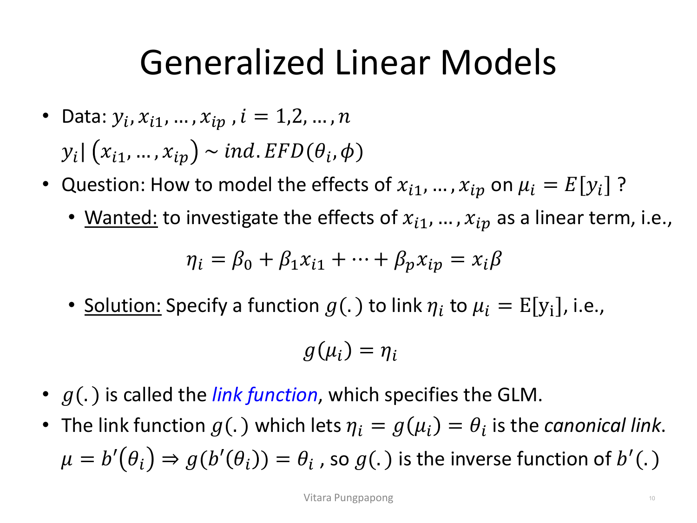
ไล่ทีละองค์ประกอบตามภาพ:
1) Random component (ส่วนสุ่ม): \(y_i \mid x_{i1},\ldots,x_{ip} \sim \text{ind. EFD}(\theta_i, \phi)\) — response แจกแจงแบบใดแบบหนึ่งใน exponential family (Normal, Binomial, Poisson, Gamma, Inv. Gaussian) โดยแต่ละ observation เป็นอิสระต่อกัน
2) Systematic component (ส่วนเชิงระบบ): \(\eta_i = \beta_0 + \beta_1 x_{i1} + \cdots + \beta_p x_{ip} = x_i\beta\) — linear predictor รูปแบบเดียวกับ classical linear model ทุกประการ (ยังเป็นเส้นตรงในพารามิเตอร์ β เหมือนเดิม แค่ไม่ได้เท่ากับ μ_i ตรง ๆ อีกต่อไป)
3) Link function: \(g(\mu_i) = \eta_i\) — ฟังก์ชัน g(·) ที่เชื่อม mean ของ response (μ_i) เข้ากับ linear predictor (η_i) — g(·) คือตัวที่ "ระบุ" ว่าโมเดลนี้เป็น GLM แบบไหน
สไลด์นิยาม canonical link เพิ่มเติม: ถ้าเลือก g(·) ที่ทำให้ \(\eta_i = g(\mu_i) = \theta_i\) พอดี (คือ link function เท่ากับ canonical parameter ของ EFD เป๊ะ) จะเรียกว่า canonical link — ในทางคณิตศาสตร์ เพราะ \(\mu = b'(\theta_i)\) (จากหัวข้อ 6) การให้ \(g(b'(\theta_i)) = \theta_i\) แปลว่า g(·) คือฟังก์ชันผกผัน (inverse function) ของ b'(·) พอดี — canonical link ไม่ใช่ทางเลือกเดียวที่ใช้ได้ (มี link function อื่นที่ไม่ใช่ canonical ก็ใช้ได้เหมือนกัน) แต่เป็นตัวเลือกที่มีสมบัติทางคณิตศาสตร์สวยที่สุดและ R ใช้เป็นค่า default เสมอถ้าไม่ระบุ link เอง
Random component: \(y_i \mid \text{age}_i, \text{driving\_history}_i \sim \text{ind. Poisson}(\lambda_i)\) — เพราะจำนวนการเคลมเป็นข้อมูลนับ (count) ที่ไม่ติดลบและไม่มีขอบบน ตรงกับ range ของ Poisson (0:∞) ตามตารางหัวข้อ 8
Systematic component: \(\eta_i = \beta_0 + \beta_1 \text{age}_i + \beta_2 \text{driving\_history}_i\)
Link function: canonical link ของ Poisson คือ log, ดังนั้น \(g(\mu_i) = \log(\lambda_i) = \eta_i\) — เลือก log เพราะทำให้ λ_i = e^η_i รับประกันว่าค่าทำนายเป็นบวกเสมอ (ตรงกับ range ของ count ที่ต้องไม่ติดลบ) ต่างจาก identity link ที่อาจทำนาย λ_i ติดลบได้
สมการโมเดลเต็ม: \(\log(\lambda_i) = \beta_0 + \beta_1 \text{age}_i + \beta_2 \text{driving\_history}_i\), \(y_i \sim \text{Poisson}(\lambda_i)\)
สไลด์รวบ 5 distribution ที่พบบ่อยที่สุดไว้เป็นตารางเดียว — นี่คือตารางที่ Lecture 9–14 จะหยิบมาใช้ซ้ำทีละแถว (Lecture 9: Binomial, Lecture ถัดไปสำหรับ count: Poisson ฯลฯ):
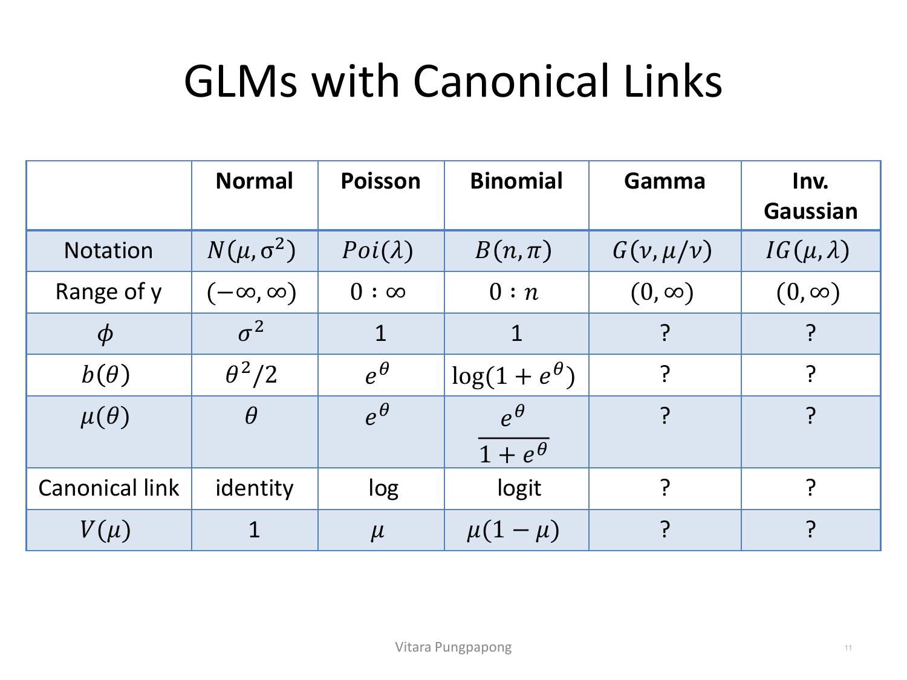
อ่านตารางทีละคอลัมน์: Normal — φ=σ², canonical link = identity (g(μ)=μ ตรง ๆ ไม่แปลงรูป), V(μ)=1 (variance คงที่ ไม่ขึ้นกับ mean — คือ assumption "constant variance" ของ Lecture 1–7 นั่นเอง). Poisson — φ=1 คงที่ (ไม่มี extra dispersion parameter ต้องประมาณ), canonical link = log, V(μ)=μ (variance เท่ากับ mean พอดี — สมบัติเฉพาะของ Poisson ที่เรียกว่า equidispersion). Binomial — φ=1 เช่นกัน, canonical link = logit (ตรงกับ θ_i=log(π_i/(1−π_i)) ที่หาไว้ในหัวข้อ 3 พอดี), V(μ)=μ(1−μ) (variance สูงสุดที่ μ=0.5 และลดลงเมื่อเข้าใกล้ 0 หรือ 1). ส่วน Gamma และ Inv. Gaussian สไลด์เว้นว่างไว้เป็นแบบฝึกหัด (สอดคล้องกับ pdf ที่ให้มาในหัวข้อ 5) — ใช้สูตรทั่วไป μ=b'(θ), Var[Y]=b''(θ)a(φ) แบบเดียวกับหัวข้อ 4 มาเติมให้ครบ:
Gamma(ν, μ/ν): กำหนด \(\theta = -1/\mu\) (θ<0 เสมอเพราะ μ>0), \(\phi = 1/\nu\), \(a(\phi)=\phi\), \(b(\theta) = -\log(-\theta)\) — ตรวจสอบ: \(b'(\theta) = -1/\theta = \mu\) ✓ ตรงกับที่ตั้งไว้, \(b''(\theta) = 1/\theta^2 = \mu^2\) ⇒ \(V(\mu) = \mu^2\), canonical link \(g(\mu) = -1/\mu\) (มักเรียกว่า "inverse"/reciprocal link — R ใช้ค่า default \(1/\mu\) ต่างกันแค่เครื่องหมายซึ่งไม่กระทบการตีความเพราะ β ปรับเครื่องหมายชดเชยได้)
Inverse Gaussian(μ, λ): กำหนด \(\theta = -1/(2\mu^2)\), \(\phi = 1/\lambda\), \(b(\theta) = -\sqrt{-2\theta}\) — ตรวจสอบ: \(b'(\theta) = 1/\sqrt{-2\theta} = \mu\) ✓, \(b''(\theta) = (-2\theta)^{-3/2} = \mu^3\) ⇒ \(V(\mu) = \mu^3\), canonical link \(g(\mu) = 1/\mu^2\) (เรียกว่า "1/μ²" link)
รวม 3 องค์ประกอบจากหัวข้อ 7 เข้ากับตารางหัวข้อ 8 จะได้ template การเขียนสมการ GLM ที่ใช้ตอบข้อสอบได้ทุกโจทย์ตั้งแต่นี้ไป:
1) \(y_i \mid x_{i1},\ldots,x_{ip} \sim \text{ind.}\) [ชื่อ distribution](พารามิเตอร์) — ระบุ distribution ที่เหมาะกับ range ของ y (ดูตารางหัวข้อ 8)
2) \(\eta_i = \beta_0 + \beta_1 x_{i1} + \cdots + \beta_p x_{ip}\) — linear predictor (เหมือนเดิมทุกครั้ง ไม่ว่า distribution จะเป็นอะไร)
3) \(g(\mu_i) = \eta_i\) พร้อมระบุรูปของ g(·) ชัดเจน (เช่น log(μ_i)=η_i, logit(μ_i)=η_i) — ถ้าไม่ระบุว่าใช้ link ไหน สมการยังไม่สมบูรณ์
ตัวอย่างการใช้ template นี้ต่อยอดจากหัวข้อ 4: OLS ของ Lecture 1–7 เขียนใหม่ในกรอบ GLM ได้อย่างไร — นี่คือสะพานเชื่อมที่สำคัญที่สุดของทั้งบทนี้
1) \(y_i \mid x_{i1},\ldots,x_{ip} \sim \text{ind. } N(\mu_i, \sigma^2)\) — random component เป็น Normal, φ=σ²
2) \(\eta_i = \beta_0 + \beta_1 x_{i1} + \cdots + \beta_p x_{ip}\) — linear predictor เหมือนเดิม
3) จากตารางหัวข้อ 8, canonical link ของ Normal คือ identity: \(g(\mu_i) = \mu_i = \eta_i\)
รวมกันได้ \(\mu_i = \beta_0+\beta_1 x_{i1}+\cdots+\beta_p x_{ip}\) ซึ่งเท่ากับ \(E[y_i|x_{i1},\ldots,x_{ip}] = \beta_0+\beta_1 x_{i1}+\cdots+\beta_p x_{ip}\) — คือ linearity assumption ของ classical linear model จาก Lecture 1 ทุกตัวอักษร พูดอีกแบบ: OLS/classical linear regression คือ GLM ที่เลือก random component = Normal และ link function = identity (canonical link ของ Normal) พอดี ไม่ใช่โมเดลคนละตระกูลกับ GLM แต่เป็นสมาชิกที่ "ง่ายที่สุด" ของตระกูล GLM เอง
β ของ GLM ประมาณด้วย maximum likelihood: จาก density function \(f(y;\theta)\) ของแต่ละ observation log-likelihood ของข้อมูลทั้งชุดคือ \(l(\mu;y) = \sum_i \log f(y_i;\theta)\) — ในบางกรณี (ที่สำคัญที่สุดคือ Gaussian GLM ซึ่งก็คือ OLS จากหัวข้อ 9) สามารถแก้สมการหา MLE ของ β̂ ได้แบบวิเคราะห์ตรง ๆ (closed-form) แต่นี่คือกรณีเดียวที่ทำได้ง่ายขนาดนั้น — distribution อื่นทั้งหมด (Binomial, Poisson, Gamma, IG) ต้องใช้ numerical optimization
วิธีมาตรฐานคือ Newton-Raphson method: หา x ที่ทำให้ g(x) มีค่าสูงสุด โดยใช้ Taylor series ประมาณสมการ \(0 = g'(x^*)\) รอบจุด \(x^{(t)}\) ปัจจุบัน จะได้สูตรวนซ้ำ \(x^{(t+1)} = x^{(t)} - \dfrac{g'(x^{(t)})}{g''(x^{(t)})}\) (หรือในรูป multivariate: \(x^{(t+1)} = x^{(t)} - [g''(x^{(t)})]^{-1}g'(x^{(t)})\)) — McCullagh และ Nelder (1989) พิสูจน์ว่าเมื่อใช้ Newton-Raphson กับ Fisher scoring (ตัวแปรหนึ่งของ Newton-Raphson ที่ใช้ expected information แทน observed information) กับ log-likelihood ของ GLM การวนซ้ำนี้เทียบเท่ากับ iteratively reweighted least squares (IRWLS) พอดี
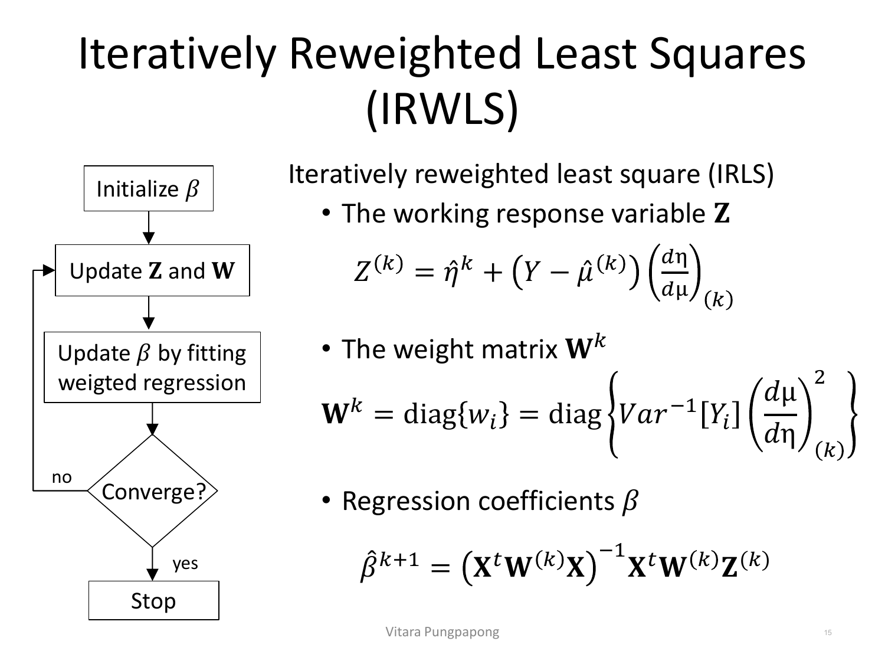
อ่าน flowchart ทีละขั้น: เริ่มจาก \(\text{Initialize } \beta\) (เดาค่าเริ่มต้น) แล้ววนลูป 3 ขั้นตอนซ้ำจนกว่าจะลู่เข้า (converge): (1) คำนวณ working response \(Z^{(k)} = \hat{\eta}^k + (Y-\hat{\mu}^{(k)})\left(\dfrac{d\eta}{d\mu}\right)_{(k)}\) — ปรับ response ให้อยู่ในสเกลของ linear predictor แทนสเกลของ μ เดิม (2) คำนวณ weight matrix \(W^k = \text{diag}\left\{\text{Var}^{-1}[Y_i]\left(\dfrac{d\mu}{d\eta}\right)^2_{(k)}\right\}\) — ให้น้ำหนักมากกับ observation ที่ variance ต่ำ (แม่นยำกว่า) และน้อยกับตัวที่ variance สูง (3) ประมาณ \(\hat{\beta}^{(k+1)} = (X^TW^{(k)}X)^{-1}X^TW^{(k)}Z^{(k)}\) — สูตรนี้หน้าตาเหมือน weighted least squares ของ OLS ทุกประการ ต่างแค่ Z และ W ต้องคำนวณใหม่ทุกรอบเพราะขึ้นกับ β̂ ปัจจุบัน (นี่คือที่มาของคำว่า "iteratively" — ทำซ้ำแล้วปรับน้ำหนักใหม่เรื่อย ๆ) กระบวนการนี้เองที่ glm() ใน R รันอยู่เบื้องหลังทุกครั้งที่เรียกใช้
การอนุมานสำหรับ GLM มี 3 เรื่องหลัก: goodness-of-fit test, การทดสอบ \(H_0: \beta_j=0\), และการเทียบโมเดล nested — ทั้งหมดตั้งอยู่บนแนวคิดเดียวคือ deviance ซึ่งมาจาก log ของอัตราส่วน likelihood (log-likelihood ratio)
จุดตั้งต้นคือ saturated model (full model) — โมเดล GLM ที่ใช้ distribution/link เดียวกับโมเดลที่สนใจ แต่ยอมให้ mean response ต่างกันได้ในทุกกลุ่มข้อมูลซ้ำ (replicate) ถ้าไม่มีข้อมูลซ้ำเลย จะประมาณ μ_i ด้วย \(\tilde{\mu}_i = y_i\) ตรง ๆ (ทำนายค่าจริงของแต่ละจุดเป๊ะ):
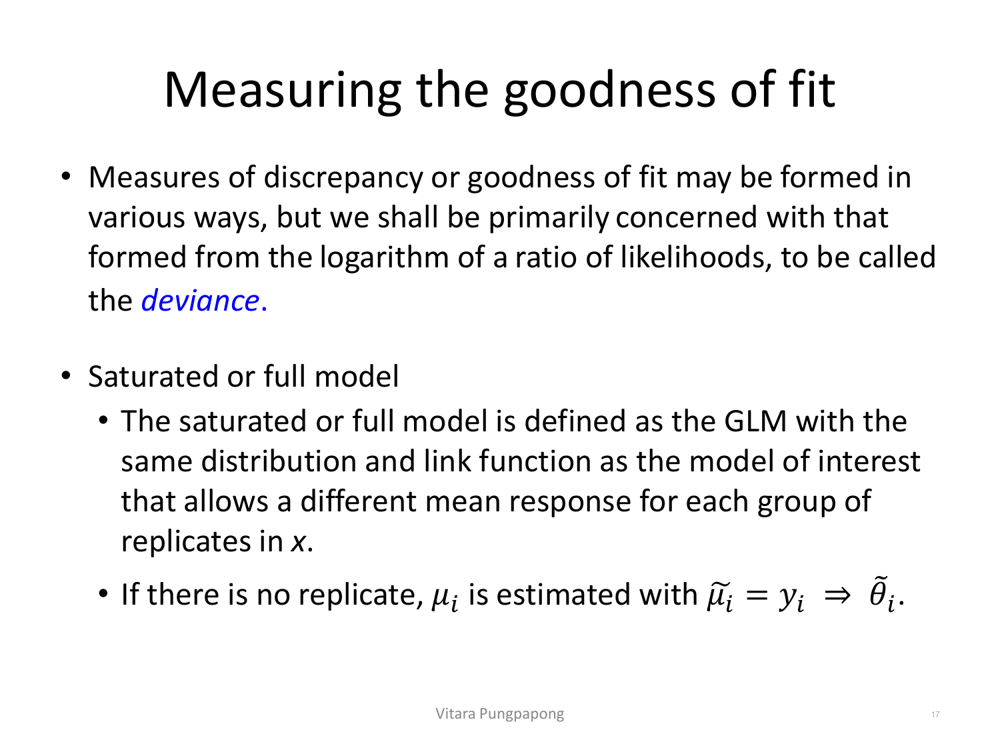
เข้าใจ saturated model ได้ง่าย ๆ ว่าคือ "โมเดลที่ฟิตสมบูรณ์แบบที่สุดเท่าที่จะเป็นไปได้" — ไม่ได้สรุปอะไรจากข้อมูลเลย (uninformative เพราะมีพารามิเตอร์เท่ากับจำนวนข้อมูล) แต่ให้ log-likelihood สูงสุดที่เป็นไปได้ ใช้เป็นเส้นฐาน (baseline) เทียบกับโมเดลที่สนใจจริง ๆ (ที่มีพารามิเตอร์น้อยกว่ามาก) — ยิ่งโมเดลที่สนใจให้ log-likelihood ใกล้ saturated model เท่าไร ยิ่งฟิตข้อมูลได้ดีเท่านั้น
Deviance คือ 2 เท่าของผลต่าง log-likelihood ระหว่าง saturated model (\(l_F\)) กับโมเดลที่สนใจ (\(l(\hat{\beta})\)):
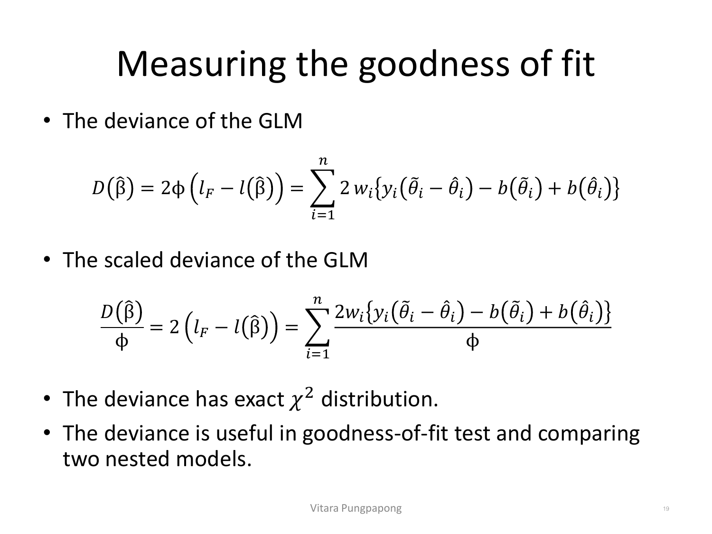
สังเกตว่า deviance \(D(\hat{\beta}) = 2\phi(l_F - l(\hat{\beta}))\) มี φ คูณอยู่ด้านนอก ขณะที่ scaled deviance \(D(\hat{\beta})/\phi = 2(l_F - l(\hat{\beta}))\) ตัด φ ออกไป — scaled deviance นี้เองที่มี exact χ² distribution และใช้เป็น test statistic ได้โดยตรง เห็นภาพรวมได้ง่ายจากไดอะแกรมนี้ ที่เรียงโมเดลตาม likelihood จากแย่สุดไปดีสุด:
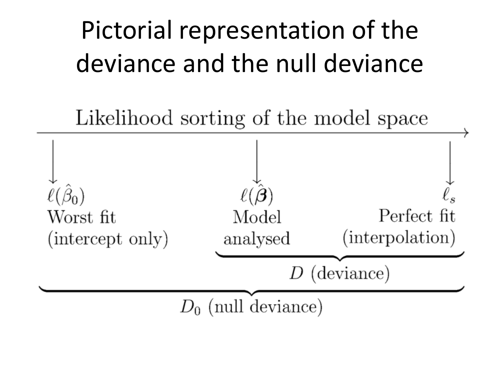
อ่านเส้นจำนวนนี้จากซ้ายไปขวา: ซ้ายสุดคือ \(l(\hat{\beta}_0)\) — "Worst fit (intercept only)" คือโมเดลที่มีแค่ β₀ ไม่มีตัวแปรอธิบายเลย (แย่ที่สุดเท่าที่ยังนับเป็นโมเดล GLM ได้) ตรงกลางคือ \(l(\hat{\beta})\) — "Model analysed" คือโมเดลจริงที่กำลังสนใจ (มีตัวแปรอธิบายครบตามที่ตั้งไว้) ขวาสุดคือ \(l_s\) — "Perfect fit (interpolation)" คือ saturated model ที่ทำนายได้เป๊ะทุกจุด ระยะจากกลางไปขวา (Model analysed → Perfect fit) คือ D (deviance) — วัดว่าโมเดลที่สนใจ "เสียของ" ไปเท่าไรเทียบกับฟิตสมบูรณ์แบบ ส่วนระยะจากซ้ายสุดไปขวาสุดทั้งหมด (Worst fit → Perfect fit) คือ D₀ (null deviance) — วัดว่าถ้าไม่ใส่ตัวแปรอธิบายเลยจะเสียของไปเท่าไร ตัวเลขสองตัวนี้ (deviance กับ null deviance) ปรากฏใน summary(glm(...)) ของ R เสมอ และเทียบกันได้ทำนองเดียวกับ R² ใน OLS: ยิ่ง deviance ลดจาก null deviance ลงมามาก ยิ่งแปลว่าตัวแปรอธิบายช่วยได้มาก
Goodness-of-fit test ตั้งสมมติฐานที่สลับด้านจากที่คุ้นเคยใน Lecture 1–7:
สังเกตให้ดี: \(H_0\) ในที่นี้คือ"โมเดลใช้ได้" (ตรงข้ามกับการทดสอบ β_j=0 ใน hypothesis testing ทั่วไปที่ H₀ มักแปลว่า "ตัวแปรนี้ไม่มีผล") — deviance ที่สูงแปลว่าโมเดลทำนายพลาดเยอะเทียบกับ saturated model จึงปฏิเสธ H₀ (สรุปว่าโมเดลใช้ไม่ได้) เป็นตรรกะย้อนกลับจาก R² ที่ยิ่งสูงยิ่งดี — deviance ยิ่งสูงยิ่งแย่ ต้องระวังอย่าจำสลับ
สำหรับ GLM แบบเต็ม \(g(\mu_i) = \beta_0+\beta_1 x_{i1}+\cdots+\beta_p x_{ip}\) การทดสอบว่าตัวแปรตัวหนึ่งมีผลจริงหรือไม่ (\(H_0: \beta_j=0\)) มี 2 วิธีหลัก:
Wald's Test — อาศัย asymptotic normality ของ MLE คำนวณง่ายที่สุด:
สังเกตว่าสูตรนี้หน้าตาเหมือน t-test ของ β̂₁ ใน SLR จาก Lecture 1 ทุกประการ (estimate หารด้วย standard error) ต่างแค่ Wald's test อ้างอิง Normal distribution แบบ asymptotic (large-sample) แทนที่จะเป็น t-distribution แบบ exact — ผลลัพธ์ z, SE, และ p-value ปรากฏในตาราง Coefficients ของ summary(glm(...)) ใน R ทันที ไม่ต้องคำนวณเพิ่ม และคำนวณ confidence interval ของ β_j ได้ง่ายจากสูตรนี้เช่นกัน (\(\hat{\beta}_j \pm z_{(1-\alpha/2)} \times SE[\hat{\beta}_j]\))
Likelihood Ratio Test (LRT) — เทียบ log-likelihood ของโมเดลเต็ม (มี β_j อยู่) กับโมเดลลด (β_j=0):
สไลด์ระบุชัดว่า โดยทั่วไป LRT ให้ผลแม่นยำกว่า Wald's test — เหตุผลเชิงสัญชาตญาณ: Wald's test อาศัยการประมาณความโค้งของ log-likelihood ที่จุด β̂ เพียงจุดเดียว (ใช้ SE ที่คำนวณ ณ ค่าประมาณ) ในขณะที่ LRT เปรียบเทียบค่า log-likelihood จริงที่จุดสูงสุดของทั้งสองโมเดล ทำให้ทนทานกว่าเมื่อ log-likelihood ไม่สมมาตร (ซึ่งพบบ่อยในตัวอย่างขนาดเล็กหรือเมื่อ β_j อยู่ใกล้ขอบเขต) — แต่ Wald's test ยังนิยมใช้เพราะคำนวณง่ายกว่ามากและ R ให้ผลมาโดยอัตโนมัติ ส่วน LRT ต้องรัน glm() สองครั้ง (โมเดลเต็มกับโมเดลลด) แล้วเทียบเอง
ขยาย LRT จากการทดสอบ β_j ตัวเดียวไปเป็นการทดสอบกลุ่มของ β พร้อมกัน — เช่น \(H_0: \beta_1=\beta_2=\cdots=\beta_k=0\) (1 ≤ k ≤ p) LRT statistic ทั่วไปคือ \(-2(l_0-l_1) \sim \text{asymp. } \chi^2_k\) (df เท่ากับจำนวนพารามิเตอร์ที่ตั้งเป็น 0 พร้อมกัน) แต่ที่สำคัญกว่าคือ สร้าง LRT ตัวเดียวกันนี้ได้จาก deviance ของสองโมเดลโดยตรง โดยไม่ต้องยุ่งกับ log-likelihood เอง: ถ้าโมเดลเล็ก (β₁=⋯=β_k=0) มี deviance \(D_0\) และโมเดลใหญ่ (มี β₁,…,β_k) มี deviance \(D_1\) แล้ว
สังเกตว่า \(D_0 \geq D_1\) เสมอ (โมเดลใหญ่มีพารามิเตอร์มากกว่า ฟิตได้ดีเท่าเดิมหรือดีกว่า deviance จึงต่ำเท่าเดิมหรือต่ำกว่า) — สไลด์เรียกวิธีนี้ว่า drop-in-deviance test เพราะเป็นการวัดว่า deviance "ลดลง" เท่าไรเมื่อเพิ่มตัวแปรกลุ่มนั้นเข้าไป ถ้าลดลงมาก (เทียบกับ χ²_k) แปลว่าตัวแปรกลุ่มนั้นมีผลจริง — ใน R คำสั่งที่ใช้คือ anova(model_reduced, model_full, test="Chisq") ซึ่งคำนวณ D₀−D₁ ให้อัตโนมัติพร้อม p-value
สไลด์เตือนไว้ตรง ๆ ว่า diagnostic ของ GLMไม่ตรงไปตรงมาเหมือน classical linear model — ในทางปฏิบัติมักอาศัย goodness-of-fit test (หัวข้อ 11) เป็นหลัก แต่ยังเช็ค model adequacy เพิ่มได้ด้วยการพล็อต \(g(\hat{\mu})\) เทียบกับ \(\hat{\eta}\) — ถ้าโมเดลเหมาะสม (adequate) จุดควรเรียงเป็นเส้นตรงพอดี (เพราะ \(g(\hat{\mu})=\hat{\eta}\) ตามนิยาม link function) ความโค้งหรือเบี่ยงเบนจากเส้นตรงบ่งชี้ว่า link function หรือรูปแบบของ linear predictor ที่เลือกไว้ไม่เหมาะสม
สำหรับการหา outlier ใช้แนวคิด leverage — วัด "ศักยภาพ" ที่จุดข้อมูลจุดหนึ่งจะมีผลต่อค่าที่ฟิตได้ (ไม่ใช่แค่ค่าที่ผิดปกติ) ผ่าน hat matrix ที่ขยายจากกรณี OLS ให้มีน้ำหนัก W เข้ามาด้วย:
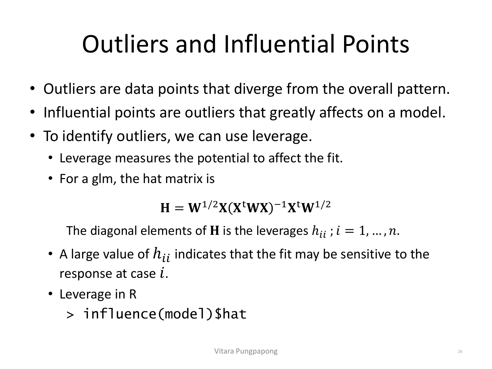
เทียบกับ hat matrix ของ OLS ที่คุ้นเคย (\(H = X(X^TX)^{-1}X^T\)) สูตรของ GLM \(H = W^{1/2}X(X^TWX)^{-1}X^TW^{1/2}\) ต่างกันตรงมี weight matrix \(W\) (ตัวเดียวกับที่ใช้ใน IRWLS หัวข้อ 10) แทรกเข้ามาถ่วงน้ำหนักแต่ละจุดตาม variance ของมัน — ค่า h_ii บนเส้นทแยงมุมของ H สูง แปลว่าจุดนั้นมี "ศักยภาพ" สูงที่จะดึงเส้นฟิตให้เปลี่ยนไปถ้าค่า response ที่จุดนั้นเปลี่ยน (ไม่ได้แปลว่าจุดนั้นเป็น outlier ที่มีผลจริงเสมอไป — ต้องแยกจาก influential point ที่เป็น outlier ที่มีผลกระทบจริง ไม่ใช่แค่มีศักยภาพ) ใน R ดึงค่า leverage ได้ด้วย influence(model)$hat
ส่วนการตรวจ influential point ที่แท้จริงใช้เครื่องมือชุดเดียวกับ linear model จาก Lecture ก่อนหน้า: cooks.distance(model) (Cook's Distance), dffits(model), dfbetas(model), covratio(model), และสรุปรวมทุกตัวได้ในคำสั่งเดียวด้วย influence.measures(model) — สไลด์ไม่ได้อธิบายสูตรของแต่ละตัวซ้ำ (สอนละเอียดแล้วในบท linear model diagnostics ก่อนหน้า) แค่ยืนยันว่าใช้ concept และคำสั่ง R ชุดเดียวกันได้กับ GLM ด้วย
ตารางนี้ไล่ทุกหน้าของ Lecture8.pdf ตั้งแต่หน้า 1 ถึง 27 — หน้าที่มี ✓ ถูกอธิบายและ/หรือใส่รูปในเนื้อหาข้างบนแล้ว ส่วนที่เหลือ (etc) เป็นหน้าปก/หน้าคั่น/รายการหัวข้อล้วน ๆ ที่ไม่มีเนื้อหาทฤษฎีใหม่ให้ทำ quiz เพิ่ม
| หน้า | เนื้อหา | สถานะ |
|---|---|---|
| 1 | ปกเรื่อง "Lecture 8: Exponential Family and Generalized Linear Models" | etc — ปก |
| 2 | Classical Linear Models — นิยามโมเดล y_i=β₀+β₁x_i1+⋯+ε_i | ✓ หัวข้อ 1 |
| 3 | Classical Linear Models — assumption 4 ข้อ (linearity, independent errors, constant variance, normality) | ✓ หัวข้อ 1 |
| 4 | Problem with classical linear model — ตัวอย่าง Bernoulli | ✓ หัวข้อ 1 (มีรูป) |
| 5 | Exponential Family Distributions — รูปทั่วไป f(y;θ,φ) | ✓ หัวข้อ 2 (มีรูป) |
| 6 | Exponential Family Distributions — จัดรูป Binomial | ✓ หัวข้อ 3 (มีรูป) |
| 7 | Exponential Family Distributions — จัดรูป Normal | ✓ หัวข้อ 4 (มีรูป) |
| 8 | Exponential Family Distributions — Exercise: Poisson, Gamma, Inverse Gaussian | ✓ หัวข้อ 5 (มีรูป) |
| 9 | Exponential Family Distributions — μ=b'(θ), Var[Y]=b''(θ)a(φ), variance function | ✓ หัวข้อ 6 (มีรูป) |
| 10 | Generalized Linear Models — data, linear predictor η_i, link function g(·), canonical link | ✓ หัวข้อ 7 (มีรูป) |
| 11 | GLMs with Canonical Links — ตาราง Normal/Poisson/Binomial/Gamma/IG | ✓ หัวข้อ 8 (มีรูป) |
| 12 | Fitting a GLM — MLE, log-likelihood, Gaussian GLM มี closed-form | ✓ หัวข้อ 10 |
| 13 | Fitting a GLM — Newton-Raphson กับ Fisher scoring เทียบเท่า IRWLS (McCullagh & Nelder 1989) | ✓ หัวข้อ 10 |
| 14 | Newton-Raphson Method — ที่มาของสูตรวนซ้ำจาก Taylor series | ✓ หัวข้อ 10 (สรุปสูตร ไม่ใส่รูป) |
| 15 | Iteratively Reweighted Least Squares (IRWLS) — flowchart + สูตร Z, W, β̂ | ✓ หัวข้อ 10 (มีรูป) |
| 16 | Inference for GLM — รายการหัวข้อ (goodness-of-fit, test H0:βj=0, nested models) | etc — สารบัญของหัวข้อ ไม่มีเนื้อหาใหม่ (ครอบคลุมในหัวข้อ 11–13 ของบทเรียนนี้) |
| 17 | Measuring the goodness of fit — นิยาม deviance, saturated/full model | ✓ หัวข้อ 11 (มีรูป) |
| 18 | Measuring the goodness of fit — saturated model (ต่อ), log-likelihood ของ GLM | ✓ หัวข้อ 11 (สรุปแนวคิด ไม่ใส่รูปซ้ำ) |
| 19 | Measuring the goodness of fit — สูตร deviance และ scaled deviance | ✓ หัวข้อ 11 (มีรูป) |
| 20 | Pictorial representation of the deviance and the null deviance | ✓ หัวข้อ 11 (มีรูป) |
| 21 | Measuring the goodness of fit — H₀:g(θ)=Xβ, deviance ~ χ²₍n−p−1₎ | ✓ หัวข้อ 11 |
| 22 | Test of Hypothesis H₀:βj=0 — Wald's Test | ✓ หัวข้อ 12 |
| 23 | Test of Hypothesis H₀:βj=0 — Likelihood Ratio Test (LRT) | ✓ หัวข้อ 12 |
| 24 | Comparing Nested Models — LRT สำหรับ H₀:β₁=⋯=βk=0, drop-in-deviance test | ✓ หัวข้อ 13 |
| 25 | Diagnostics for GLM — ข้อจำกัดของ diagnostic, plot g(μ̂) vs η̂ | ✓ หัวข้อ 14 |
| 26 | Outliers and Influential Points — leverage, hat matrix H | ✓ หัวข้อ 14 (มีรูป) |
| 27 | Outliers and Influential Points (cont.) — Cook's Distance, DFFITS, DFBETAS, COV Ratio | ✓ หัวข้อ 14 |
สงสัยตรงไหน ถามได้เลยในแชท — ผมเป็นผู้สอนของคุณ ถามซ้ำได้ ถามลึกได้ ไม่ต้องเกรงใจ